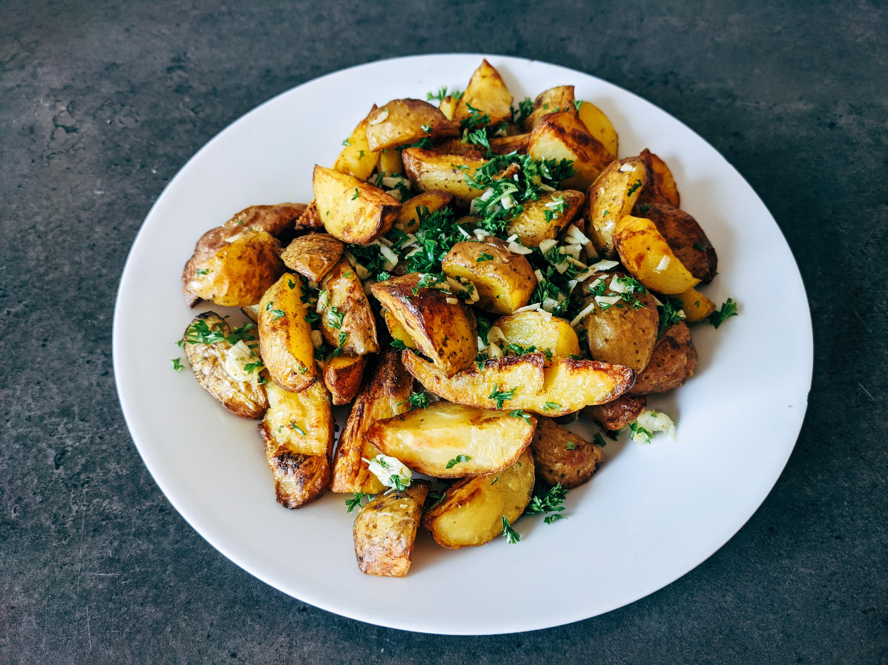

Garlic Parm Fries
Home

Golden brown, crispy potato wedge style fries tossed in garlic, parmesan, and fresh parsley. These are the perfect side dish for any meal!
Ingredients
- 2 lbs russet potatoes, cut into wedges
- 1/4 cup olive oil
- 3 cloves garlic, minced
- 1/2 cup grated parmesan cheese
- 1 tbsp fresh parsley, chopped
- Salt and pepper to taste
Steps
- Preheat oven to 425°F (220°C).
- In a large bowl, toss the potato wedges with olive oil, minced garlic, salt, and pepper.
- Spread the potatoes in a single layer on a baking sheet lined with parchment paper.
- Bake for 25-30 minutes, flipping halfway through, until golden brown and crispy.
- Remove from oven and sprinkle with grated parmesan cheese and chopped parsley.
- Serve immediately and enjoy!